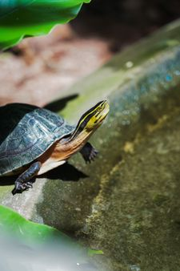
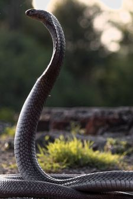

Turtles are some of the oldest reptiles in the world with some living as long as 150 years, the shell of a turtle is made up of its own rib cage and spine consisting of about 50 bones it also grows with the turtle so it never outgrow the shell, most speciws of turtles can live both on land and in water with their webbed feet or flippers helping them thrive in aquatic environments.

When a snake is captive it can live as long as 170 years and when it's left in the wild it can only live for about a 100 years, depending on the species a snake scales can serve a unique purpose for most scales help them retain moisture in the body and in other cases the scales help with grip and reduce friction helping snakes navigate faster in whatever terrain they are in, scientists believe that snakes evolved from burrowing or aquatic lizards, a way to tell a venomous snake from a non-venomous one is to looked into the eyes as venomous snakes have slitted or elliptical pupils while non-venomous snakes usually have round pupils despite this you should stay far away from a snake when you see one.